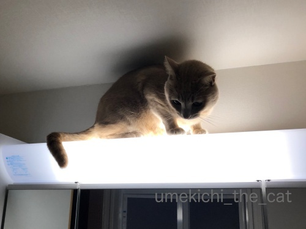

悪魔の足跡？〜浮かび上がる爪痕〜 [梅吉]

中央付近、ぼんやりと浮かび上がる白い影のようなもの・・・
我が家に何か邪悪なものが！？
もう一箇所見えています。
こちらの方がくっきり正体が見えるでしょうか・・・
爪の長い？生き物の足跡？？きゃ〜！！

正体は！この方の足跡！！
天井にレジ袋を丸めた球を投げつける遊びがお気に召したのか（狭い空間の方が楽しいらしい）
照明の上が暖かいのかわかりませんが、しょっちゅう洗面ドレッサーの上に上がっています。
乗るときはひとっ飛びですが降りる時は鏡に手をつけながら
ずずずず〜っと滑り降りる感じ。
そのとき鏡にこんな足跡が残ってしまうのです。

お風呂上がりに蒸気が当たるとこんな風に浮かび上がってもきます。
足跡があるのは分かっちゃいるのですが毎日ちょっとどきっとしますよ (⌒_⌒;
（拭いても拭いてもまた付けられるんですw）
おかーさんの日々のどきっと、何回もガラスを拭く手間なんてどこ吹く風で
ドレッサーの上を楽しむ梅吉さん。

写真の撮り方と顔の角度によっては女優ライトを浴びているようにもなり

怪談を語る稲川淳二風にもなるのでした( ´艸｀)
本格的に寒くなりましたがまだベランダには出たがります。
（もっと寒くなると行きたがらなくなりますw）
外壁での爪とぎ、長いバージョン。

短いバージョン(≧▽≦)
みなさまご存知、仙台銘菓『萩の月』
このお菓子を作っている会社「三全」に『ずんだ茶寮』という
ずんだをメインにしたお菓子のブランドがあるのですが・・・
先日のおっとの仙台出張土産が『ずんだ茶寮』の“ずんだ白雪チーズケーキ”
ずんだに包まれたレアチーズケーキかと思ったら
ずんだは中に挟まってました。
意外な組み合わせのようですがぴったり！！
美味しかったでーす＾＾
（だだちゃ豆がたまらなく好きです＾＾）

カフェオレ色の梅吉

梅吉 2023年8月10日 永眠


梅吉と出会った譲渡会

犬猫の理由なき殺処分ゼロ
妄想広告
UMEKICHI 光

爆発的に早い！
時々攻撃的！
Thanks to Mr.Boss365
爆発的に早い！
時々攻撃的！
Thanks to Mr.Boss365

悪魔の足跡知らない人が見たらびっくりしますよ。コワイですね~。
ずんだチーズケーキ美味しそう。仙台でしか売ってないのかしら。
by zombiekong (2018-12-17 02:08)
愛しい我が家のニャンコさんの足跡とはいえ、
夜中に寝ぼけてみると「キャー」って叫んじゃいそう(⌒-⌒; )
ニャンコってちょっと狭くて暖かくてそして見渡せる高い場所好きですよねぇ( ^ω^ )
ベランダ、風さえなければ日向ぼっこ楽しめそう♪( ´▽｀)
by ニッキー (2018-12-17 07:30)
梅吉さん、足跡を残していますね！
今日から数日押し逃げになりますm(__)m
by ma2ma2 (2018-12-17 08:10)
ずるずるっとなるから、怪奇な手形になってますね〜。
梅吉さん、なかなかの筆さばきですね。毎日、練習してるのかな^^。
by nachic (2018-12-17 08:23)
鏡の写真だけみたら、まさしくホラー映画！
かなり怖いかもー(^_^;)
by よーちゃん (2018-12-17 09:01)
大爆笑ｗｗ
さいしょ、なんだこれーーー？？？って思ったら
梅吉君の足跡とはｗｗ
ライトの当たり具合で猫もいろいろ変わるのね^m^
梅吉君は良い役者さんだわ！
あー、洗面所の鏡・・・磨かなくちゃだー^^;
水の跳ねたあとが点々とついてるよｗｗ
by リュカ (2018-12-17 09:57)
キャー！足跡～(#^.^#)
肉球はっきりと♪
確かに知らない人が見たら・・・
我が家は出窓とベランダの窓は
鼻の跡がすごく・・・拭いても落ちません(;^_^A
by きぃ (2018-12-17 11:30)
おはようございます。
鏡に足跡は驚きますが、！梅吉君のメッセージの可能性もあります。
２枚目は写真は、タコを描いています？
４枚目の写真は、ニャンズ文字・掠れ文字でアート性が高いですね。
女優ライト（笑）遊びこころある稲川淳二風は最高！！
「ずんだ茶寮」の切り口を見たら、たまらない感じです。
だだちゃ豆の旬？が気になるけど・・・！？(=^･ｪ･^=)
by Boss365 (2018-12-17 11:49)
わはは(≧▽≦) こわすぎる～！！
ズズズ～ッと肉球滑らせておりるから余計に大きく見えるんでしょうが、コレ、熊ですよ～^^
我が家もいたるところ肉球＆鼻スンスンのあとだらけ。
最初はせっせと拭いてましたがもう気にならなくなりました^^;
女優にも稲川順二にもなれる梅吉さん、最高♪
ウチもどこか下から照明当てられる場所無いかな・・・探そっ^^
by ゆきち (2018-12-17 12:58)
まあ怖い！うちもよく見たらいろんなとこに肉球あとがついていますよ～(-_-;)でもこれ人間の手のようにデカいですよね？梅吉くん大きくなったの?
by palpal (2018-12-17 14:32)
稲川淳二風の梅吉さん、恐いけど大受けしてしまいました!
猫の表情は見ていて飽きませんね。
いつも梅吉さんやいろんなブログで楽しんでいます(^^)
by kou (2018-12-17 16:58)
（笑）怖すぎます〜（笑）
ずずずず〜っと降りるところも見たかったですよ（笑）
写真を撮られる時、ライトを下から受けない様にしないといけませんね。
それにしても梅吉さんは女優風にも怪談風にもなれるのですね（笑）
外壁での爪とぎ、同じ梅吉さんで長短で面白いこと。
ずんだ茶寮は梅田の大丸の地下にお店がありますが、
『白雪チーズケーキ』探してみます！あれば良いです。
by kiki (2018-12-17 17:00)
イルミ写真を満月広場に掲載させていただきました。いつもご協力ありがとうございます。
by zombiekong (2018-12-17 17:52)
洗面所の鏡。お風呂からの蒸気ではっきりと浮かび上がってくるんですよね(^-^;
しかもなかなか取れない。
我が家もテレビの画面も窓ガラスもどこもかしこも肉球マークだらけです。
稲川淳二風・・・好きかも～。でも、そんなに怖くないよ(≧▽≦)
by emi (2018-12-17 21:49)
足跡、うわっ怖い！
でも、実際に見たら可愛いのかも。^^)
そうそう。ちょっと脱線しますが、
車のボンネットにたまに猫の足跡がついていることがあります。
で、その足跡が途中からズズズと下に向かって跡がついていると
つい笑ってしまいます。^^;
by yes_hama (2018-12-17 21:51)
わぉ、もや～っっと怪しげな足跡が‥！
ずずず～っと降りるんですね＾＾；
女優ライトと稲川淳二ふうライトのあび加減も絶妙～♪
ずんだ餡の入った白いチーズケーキ、美味しそう＾＾
by sana (2018-12-17 22:31)
亡霊かと思ったよ（ﾟ□ﾟ）
by 英ちゃん (2018-12-17 22:45)
怖くてお風呂に入れません。
梅吉さんは天使だと思っていましたが、悪魔だったんですね。
でも、かわいい悪魔＾＾
by riverwalk (2018-12-17 23:15)
・・・はっ！イケナイモノが写り込んだ！？（笑）
2枚目の手、ちょっとヒトっぽい^^;
ウチのちゃーも、洗面台の鏡台上に乗っちゃいます。
そういうときは、上から見下ろされてます・・・。
（ほとんど一気降りなので手形はときどき、ついてます）
ずんだチーズケーキ！？おいしそうです。
来年の5月（先^^;）に仙台行く予定があるので覚えておきます！＝３
でもやっぱり、だだちゃ豆は塩茹でが一番ですよね♡
by Ja-Kou66 (2018-12-17 23:58)
我が家ではストーブの熱気で天井付近の方が暖かいので
棚の上やタワーの頂上が人気です＾＾
by ぽちの輔 (2018-12-18 06:33)
おおお～梅吉さんやりますなぁ(笑
こんなホラーな爪痕を残せるのは身軽なニャンズのみですね。
タルちゃんにはできない技です。
ずんだ白雪チーズケーキ美味しそうです。
ネットでお取り寄せ可能かしら(^^
by marimo (2018-12-18 10:18)
梅吉さん、またまた楽しい遊びを生み出しましたね(^_-)-☆
こんな足跡がつくんだ…( ´艸｀)
ホラーかわいいな～♡(≧▽≦)
by マーヤ (2018-12-19 00:29)
梅吉さん、稲川淳二風面白いです^^
チャーシューメンは、ぎょうざの満州です^^
by ニコニコファイト (2018-12-19 06:44)
zombiekongさん＞
間違いなく我が家に来たお客さんはびっくりすることでしょうw
猫好きな方だったら大喜びかしらー0(≧▽≦)0
ということは、どなたかいらっしゃる時相手によっては
拭いてはいけない、と・・・_φ(･_･
ずんだ茶寮は！kikiさんにコメントいただいて知ったのですが
なんと！大阪梅田に店舗がありました(⌒_⌒;
関東は羽田空港、大丸、東急、ソラマチに店舗があるようです＾＾
私はずんだシェイクが気になって仕方ありませんwww
ニッキーさん＞
私は残念ながら「キャー」ではなく「んじゃこりゃーーっ！」（by優作）
でしたよー(*>艸<)
にゃんこは本当に快適な場所を見つけるのが上手ですよね。
快適センサーみたいなの持ってるんじゃないかと思えるくらいです。
ベランダは暖かい日を選んで梅吉と日向ぼっこするのが楽しみです♪
ma2ma2さん＞
毎日くっきりはっきり残してくれてますw
押し逃げ、お気になさらずに(^_－)☆
早く退院出来ると良いですね！
nachicさん＞
指の部分が長〜くなっているのがなんともホラーちっくなのですよw
筆さばき、肉球さばきは確実に上達しているようで
痕が日々くっきりしてきているような気が(＠◇＠)
よーちゃん＞
初めて見た時は思わず後ろを振り返っちゃいましたよw
肉球痕と気付くまではおっとが付けたんだと思ってました(⌒_⌒;
リュカさん＞
他にもね、ライトの当たり方でノズパスみたいにもなるの( ´艸｀)
鼻の線が強調されてる感じ？
ポケgoはご存じない方もいるなぁ・・・と記事にはしませんでしたw
水回りはお掃除嫌なところよね。
やってもやってもすぐ汚れる！
私は窓ガラス磨かなきゃ・・・（一番嫌いな家事(-_-メ)）
きぃさん＞
肉球の跡は大歓迎なんですがこれは形が可愛くないのですよー。
たまーにですが、ずるずる降りなかったのか
ミッキーマウスみたいな跡が残っている時は「♡ 」です＾＾
鼻紋は強力ですよね・・・
最初に飼った猫が蓄膿みたいになって鼻紋と鼻汁を
窓につけまくられて大変でしたw
Boss365さん＞
Σ(ﾟ◇ﾟ；)梅吉のメッセージ！！
分かりました。日々これらの肉球文字を解読するよう頑張りますw
ヒエログリフみたいな文字？
解読したら辞典にまとめます(^_－)☆
どんなメッセージが込められているのか
楽しみなようでもあり、怖いようでもありw
ずんだ餡、冷凍できるので冷凍保存にて、かな？
ずんだシェイクも気になって仕方ありません！！
ゆきちさん＞
ほんと！クマ並みです！！
敵を威嚇するため？肉球の痕を大きくつけるみたいな知恵なんでしょうか＾＾
神社の門に飾ってあるでっかいわらじみたいなw
このでっかい肉球足跡効果で我が家に悪しきものが寄り付かないよう願います！
フローリング、ソファの爪とぎ痕・・・我が家も平気になりましたwww
心も広くなったかというとそれは無く、猫限定の寛容さ、です(*>艸<)
palpalさん＞
光の加減とかでガラス、フローリング、
びっくりするくらい跡が付いているのに気づきます・・・(-_-メ)
梅吉、実は「夏目友人帳」のにゃんこ先生の真の姿のように
でっかい何か、なのかも・・・・
kouさん＞
生で見てても「梅吉、怖い！！」って思いますよ ( ´艸｀)
この怖い顔のまま誰もいない部屋の片隅を見つめるのは
ちょっと勘弁して欲しいですけれど・・・
私も猫の怖い顔も女優顔も（笑）日々楽しませてもらってます！！
kikiさん＞
ずずずず〜も撮りたかったのですがカメラを向けると
やってくれませんでした(-_-メ)猫様、あるある・・・
私は写真に写る時下からライトを浴びて女優風に写ろう！と
固く決意しましたー ( ´艸｀)
「ずんだ茶寮」情報ありがとうございます！！
梅田にあったなんてチェック不足でした・・・
ずんだシェイクなるものが気になって仕方ありません(≧▽≦)
zombiekongさん＞
こちらこそー！掲載ありがとうございます＾＾
後日もう一枚お送りするかもしれません！
emiさん＞
emiさんちにも浮かび上がる肉球痕が！
綺麗に拭いたつもりでも蒸気で浮き上がってくるんですよねーw
「掃除が甘い！」と梅吉に言われているようにも感じますよ(⌒_⌒;
稲川風・・・
ふふふこの顔で誰もいない廊下の方を見つめられるとコワイですよw
思わず振り返っちゃいます・・・
yes_hamaさん＞
実際に見たら・・・
かわいいミッキーマウスみたいな跡の時はニコニコしちゃいますが
大体が「また跡つけてー！！もうっ(`o´)」としか思えませんwww
ボンネットの足跡は想像力を掻き立てられますよね！
転げ落ちたかな〜なんて想像したり＾＾
札幌時代は車の上にうっすら積もった雪で表層雪崩に会い
尻餅をつきながら落下したらしいニャンコの痕跡を見たことがあります0(≧▽≦)0
sanaさん＞
そうなんです。もやもや〜っと怪しく汚してくれるのです(⌒_⌒;
女優さんがライティングにこだわるのはこれか！と
女優梅吉の写真を見て思いました。。。
この他モアイ像みたいな顔になるときもあるのですよ( ´艸｀)
ずんだ茶寮、関西にも関東にも店舗がありました・・・(-_-メ)
英ちゃんさん＞
にゃんこの亡霊なら大歓迎です(^_－)☆
梅吉のつける肉球痕が魔除けになってくれるといいなぁ・・・
riverwalkさん＞
お気をつけください・・・
鏡に浮かび上がる怪しいものがあるかもしれませんw
天使でもあり、かわいい悪魔でもありかわいいいたずら坊主でもあり＾＾
どんなだって最強にかわいい「うちの子」です(≧▽≦)
Ja-Kou66さん＞
２枚目はホラー映画に出てくる
未知の人類系の生物、って感じですよね (^_^;)
私は「サル？」って思いましたw
ちゃーくんは洗面台使っている人の背中に降りてきたりしませんか？
私はシャンプー時に背中に飛び降りられた経験ありです(-_-メ)
ずんだ茶寮、関東のデパートにも入ってました・・・
（関西のデパートにも・・・）
でも！仙台で買ってこその価値がー！！
きっとあるはず・・はず・・（リフレインかけてくださいwww）
ぽちの輔さん＞
脚立持ち出して「この辺りどうなの？」と
梅吉のいる辺りの温度を確かめてます！
ほんとあったかいところばかりなんですよねー＾＾
marimoさん＞
やんちゃで向こう見ずなのでどこでも上がっちゃうし
飛び降りてきちゃうし・・・
最近は随分分別がついてきましたけど幼い頃はヒヤヒヤでした(^_^;)
先代がおとなしくて高い所に上がらない子だったので
猫でも随分違うなぁと思ったものですw
ずんだ茶寮、ネットでお取り寄せも可能です、が！！
なんと梅田の大丸に入ってました。知らなかった・・・・
マーヤさん＞
足跡つける→文句を言いながら拭くの無限ループ
耐久レース的遊びですw
ホラーかわいい、良いですね＾＾気に入っちゃった(≧▽≦)
ニコニコファイトさん＞
ぎょうざの満洲でしたか＾＾
私はタンメンがお気に入りでーす(≧▽≦)
by ちぃ (2018-12-19 20:27)
ずんだ、ずんだ、ずんだ~♪
（今回はずんだチーズケーキの勝利）
でも梅吉さん＆ライトも楽しい。
by ふにゃいの (2018-12-22 11:09)
ふにゃいのさん＞
ずんだ、お好きですか＾＾
ずんだ茶寮、なんと関東にも関西にもデパートに入っていますwww
by ちぃ (2018-12-23 16:15)